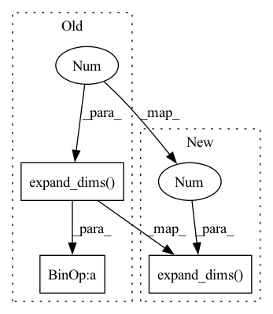

Pattern ID :35062

Before Change
//---------------------------------------------------------//
// 添加上batch_size维度
//---------------------------------------------------------//
image_data = np.expand_dims(np.transpose(np.array(image_data, dtype="float32"), (2, 0, 1)), 0) / 255.
with torch.no_grad():
images = torch.from_numpy(image_data)
After Change
//---------------------------------------------------------//
// 添加上batch_size维度
//---------------------------------------------------------//
image_data = np.expand_dims(np.transpose(preprocess_input(np.array(image_data, np.float32)), (2, 0, 1)), 0)
with torch.no_grad():
images = torch.from_numpy(image_data)
In pattern: SUPERPATTERN
Frequency: 4
Non-data size: 3
Instances
Fragment ID: 100125920
Project Name: bubbliiiing/deeplabv3-plus-pytorch
Commit Name: 13e1b6b36db1327007845f05268a5c12c3e2c4a5
Time: 2021-09-04
Author: 47347516+bubbliiiing@users.noreply.github.com
File Name: deeplab.py
M Class Name: DeeplabV3
N Class Name: DeeplabV3
M Method Name: get_FPS(3)
N Method Name: get_FPS(3)
M Parent Class: object
N Parent Class: object
M File Name: deeplab.py
N File Name: deeplab.py
M Start Line: 180
M End Line: 180
N Start Line: 179
N End Line: 179
'>
Before Change
prediction = prediction.detach().cpu().numpy()
conf_mask = (prediction[:,:,4] > confidence)
conf_mask = np.expand_dims(conf_mask, 2)
prediction = prediction * conf_mask
def numpy_max(input, dim):
// Input -> tensor (10x8)
After Change
coco_labels = coco_labels.decode("utf-8").split("\n")
prediction = prediction.detach().cpu().numpy()
conf_mask = (prediction[:,:,4] > confidence)
prediction *= np.expand_dims(conf_mask, 2)
labels = []
// Iterate over batches
for img_pred in prediction:
max_conf = np.amax(img_pred[:,5:5+num_classes], axis=1)
'>
Fragment ID: 100125918
Project Name: geohot/tinygrad
Commit Name: 0f58c4c64869d44a74a08a6d5d1362d509740d1a
Time: 2023-02-26
Author: 39754370+jla524@users.noreply.github.com
File Name: examples/yolov3.py
M Class Name: AnonimousClass
N Class Name: AnonimousClass
M Method Name: show_labels(3)
N Method Name: show_labels(3)
M Parent Class:
N Parent Class:
M File Name: examples/yolov3.py
N File Name: examples/yolov3.py
M Start Line: 19
M End Line: 52
N Start Line: 15
N End Line: 36
'>
Before Change
//---------------------------------------------------------//
// 添加上batch_size维度
//---------------------------------------------------------//
image_data = np.expand_dims(np.transpose(np.array(image_data, dtype="float32"), (2, 0, 1)), 0) / 255.
with torch.no_grad():
images = torch.from_numpy(image_data)
After Change
//---------------------------------------------------------//
// 添加上batch_size维度
//---------------------------------------------------------//
image_data = np.expand_dims(np.transpose(preprocess_input(np.array(image_data, np.float32)), (2, 0, 1)), 0)
with torch.no_grad():
images = torch.from_numpy(image_data)
'>
Fragment ID: 100125917
Project Name: bubbliiiing/deeplabv3-plus-pytorch
Commit Name: 13e1b6b36db1327007845f05268a5c12c3e2c4a5
Time: 2021-09-04
Author: 47347516+bubbliiiing@users.noreply.github.com
File Name: deeplab.py
M Class Name: DeeplabV3
N Class Name: DeeplabV3
M Method Name: detect_image(2)
N Method Name: detect_image(2)
M Parent Class: object
N Parent Class: object
M File Name: deeplab.py
N File Name: deeplab.py
M Start Line: 114
M End Line: 123
N Start Line: 107
N End Line: 122
'>
Before Change
@ignore_warnings(category=ConvergenceWarning)
def _elastic_solver(self, X, y, view_index):
self.weights[view_index] = np.expand_dims(
self.regressors[view_index].fit(X, y.ravel()).coef_, 1
)
self.weights[view_index] /= np.linalg.norm(
self.views[view_index] @ self.weights[view_index]
) / np.sqrt(self.n)
def _objective(self):
After Change
@ignore_warnings(category=ConvergenceWarning)
def _elastic_solver(self, X, y, view_index):
return np.expand_dims(
self.regressors[view_index].fit(X, y.ravel()).coef_, 1
)
def _objective(self):
views = len(self.views)
c = np.array(self.c)
'>
Fragment ID: 100125916
Project Name: jameschapman19/cca_zoo
Commit Name: 06c5cd6a8e9a7253e13919a5d8180b33ac15a885
Time: 2021-11-17
Author: james.chapman.19@ucl.ac.uk
File Name: cca_zoo/models/innerloop.py
M Class Name: ElasticInnerLoop
N Class Name: ElasticInnerLoop
M Method Name: _elastic_solver(4)
N Method Name: _elastic_solver(4)
M Parent Class: PLSInnerLoop
N Parent Class: PLSInnerLoop
M File Name: cca_zoo/models/innerloop.py
N File Name: cca_zoo/models/innerloop.py
M Start Line: 404
M End Line: 409
N Start Line: 360
N End Line: 362